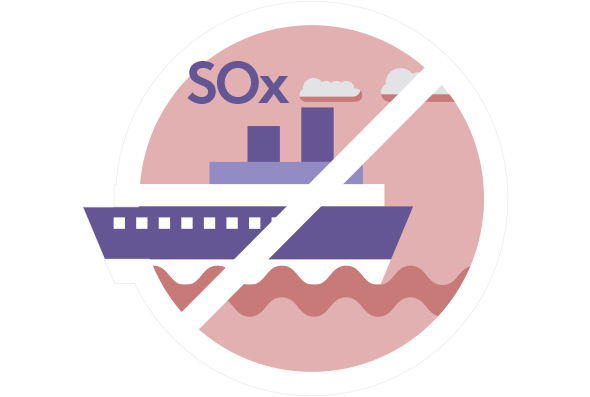

와 제 롤모델이 잡스에요!!! 아이폰 첫 출시되고 나서부터 계속 아이폰 쓰고 있는데 잡스가 너무 그리워요ㅠㅠ 지금은 돈만 벌려고 하는 것 같아서 디자인 발전도 없고ㅠㅠ와 제 롤모델이 잡스에요!!! 아이폰 첫 출시되고 나서부터 계속 아이폰 쓰고 있는데 잡스가 너무 그리워요ㅠㅠ 지금은 돈만 벌려고 하는 것 같아서 디자인 발전도 없고ㅠㅠ와 제 롤모델이 잡스에요!!! 아이폰 첫 출시되고 나서부터 계속 아이폰 쓰고 있는데 잡스가 너무 그리워요ㅠㅠ 지금은 돈만 벌려고 하는 것 같아서 디자인 발전도 없고ㅠㅠ와 제 롤모델이 잡스에요!!! 아이폰 첫 출시되고 나서부터 계속 아이폰 쓰고 있는데 잡스가 너무 그리워요ㅠㅠ 지금은 돈만 벌려고 하는 것 같아서 디자인 발전도 없고ㅠㅠ와 제 롤모델이 잡스에요!!! 아이폰 첫 출시되고 나서부터 계속 아이폰 쓰고 있는데 잡스가 너무 그리워요ㅠㅠ 지금은 돈만 벌려고 하는 것 같아서 디자인 발전도 없고ㅠㅠ
해운 와이드뷰
Shipping Wide View
지난 한 달 동안 보도된 해운 관련 외신 기사를 요약해 소개한다.
-
Shippingwatch중국, 주요 항로 황산화물 배출 규제 석 달 앞당겨
영국 해상보험회사인 North P&I에 따르면, 중국 당국이 예상보다 3개월 빠른 시점인 오는 10월 1일부로 양쯔강 운항 선박에 0.5% 황산화물 배출 규제를 적용한다고 밝혔다. 이에 따라 선주들은 기존 고유황유 사용에서 저유황유 사용으로 전환하기 위해 보다 철저한 운항 준비가 필요한 상황이다. 양쯔강을 포함한 ECA(Emission ControlArea) 지역에 접안하거나 정박하는 선박 모두 0.5% 황산화물 배출 규제에 적용 받게 된다.
-
Splash247CMA-CGM 인수 타겟 물색 중
CMA의 CEO Saade는 프랑스 르아브르에서 열린 선박 진수식에서 Hapag-Lloyd를 인수하기 위해 검토했으나 지금은 인수 대상으로 고려하고 있지 않다고 언급했다. 하지만 Saade는 현재 해운업 시장에서 합병이 필요한 상황이라며, 여전히 인수 대상을 물색 중이라고 전했다.
-
Lloyd’s ListEvergreen, CMA-CGM에 피인수 루머 부인
CMA-CGM이 Evergreen에 40억 달러 인수 의사를 밝혔다는 소문이 돌았으나, Evergreen 관계자는 해당 소문은 근거 없는 루머일 뿐이라고 CMA-CGM과 인수 협의 소문을 일축했다. 인수루머 관련하여 CMA-CGM은 언급을 거부한 상태이다.
-
ShippingwatchMaersk, “일부 선박에 스크러버 설치”
스크러버에 지속적인 부정적 입장을 고수해온 Maersk가 결국 일부 선박에 스크러버를 설치 할 계획을 밝혔다. 과거 Maersk가 스크러버에 대해 논란을 제기하자, 업계에서는 Maersk가 IMO 2020 환경규제 시행 시기를 늦추려 한다고 비판을 받기도 했다. Maersk는 스크러버를 황산화물 규제 대응책으로 선택하지 않겠다고 발표한지 거의 1년 만에 입장을 바꿔 일부 선박에 스크러버 관련 테스트를 진행하겠다는 의사를 밝혔다.
-
ShippingwatchMaersk, 새로운 유류할증료 도입 예정
Maersk는 2019년 1월 1일부터 새로운 유류할증료(BAF)를 도입할 예정이라고 밝혔다. 아울러 Maersk의 주요 경쟁사 3사(ONE, OOCL, APL)는 Maersk의 새로운 BAF 도입 계획에 대해 동의하는 입장을 표명했다. 새로운 BAF는 현재 BAF를 대체하는 유류할증료로서, IMO 2020 황산화물 배출규제에 따른 연료유 비용 증가에 대비한수단으로 연료비 상승분의 일부를 화주에게 부과하여 비용을 보전하기 위한 것이다.
-
최고예요
322
-
좋아요
322
-
슬퍼요
322
-
그저 그래요
322
-
화나요
322